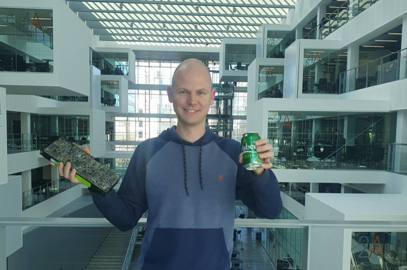
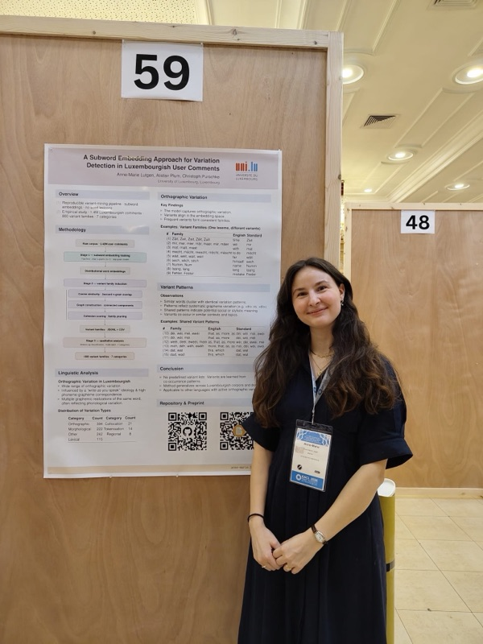

Linguistically Motivated Language Models
About
Welcome to our website! We are a group of people with an interest in the language part of NLP, and we are part of the NLPnorth group at the IT University of Copenhagen (ITU). Among other things, our interests are in:
- Do language models learn linguistic structures? If yes: how, when, where?
- Can we enhance language models in some dimensions by incorporating more linguistic signals?
- How do we adapt architecture and training for languages with specific properties? What are the relevant properties for this?
- How can we use language overlaps to train better multi-lingual models?
- How do we best represent text as an input to a neural network model?
We hold online monthly meetings where we discuss topics on the linguistic aspects of NLP. If you would like to join, or just want to know more about the projects, get in touch at ropass@itu.dk.
People
-

Rob
Building more robust models in low-resource settings, and somehow still believes linguistic structure can be useful for this.
-
Roberto
Exploring effects of linguistically motivated tokenization, and implications for embedding spaces.
-
Yi
Linguistic structure and typology in language modeling, and evaluation methods that better reflect models’ capabilities.
-
Arzu
I study the linguistic skills of language models. My focus is less on benchmarking models and more on which structures models handle well, where they fail, and why, across typologically diverse languages. I’m also interested in how models generalize linguistic information when trained under controlled conditions.
-

Anne-Marie
Exploring how sociolinguistic insights can inform NLP research and how NLP methods can be adapted to better represent and process variation.
-
Carmin
My focus is on studying and evaluating morphologically motivated tokenization for multilingual language models.
Funding, Grants & Institutional Partners
-
3CPO
Multilinguality in language models is often only considered in the last phase of the design and training. In contrast, we propose to consider diversity from the start; we propose a variety of sampling techniques that target language coverage, and train tokenizers on a more diverse/fair sample. We compare training on the 100 most frequent languages against all languages with data and cluster-based samples.
Granted by Nvidia (200,000 USD compute credits)
-
LMLM
LMLM proposes to build Linguistically Motivated LLMs. This is done by adapting the training regime as well as the LLM architecture to incorporate different linguistic levels. This will lead to mitigation of shortcut learning and more reliable LLMs.
Granted by the Carlsberg Foundation (7M DKK) · Grant page
Contact
- Roberto · ropass@itu.dk
- Rob · robv@itu.dk